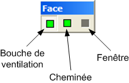

La barre d'outils Face est uniquement active lorsque un modeleur de face est actif.
Cet outils permet de dessiner une bouche de ventilation sur la face d'une machine en édition.
Cet outils permet de dessiner une cheminée sur la face d'une machine en édition.
Cet outils permet de dessiner une fenêtre sur le mur d'un étage en édition.